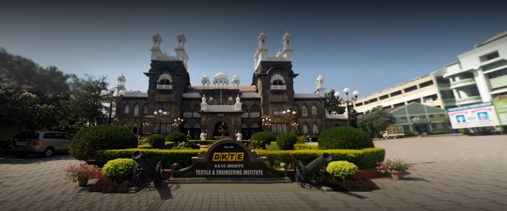

● About DKTE
- DKTE’s Textile & Engineering Institute, with its exquisite and iconic historic mansion and sprawling campus is situated in the heart of Ichalkaranji city, the city which is known as the Manchester of Maharashtra. The institute was established in 1981 under the guidance of a visionary and a philanthropist leader Mr.K.B. Awade (Ex. M.P). To support the phenomenal growth of the textile industry that was taking place at Ichalkaranji and to overcome the dearth of technically qualified professionals, the founding of the institute has significantly contributed in enhancing the technological, industrial and economic development of the region and the country for last four decades.
- With the dedication to achieve academic excellence, the institute has grown multi-folds and has branched into various disciplines. Presently the institute offers twelve undergraduate programmes, six post graduate programmes, Management studies and three vocational degree programs. The Institute has approved Research Centre for Ph.D. programs in Textile Engineering, Electronics Telecommunication Engineering, Mechanical Engineering, and Computer Science Engineering. The rich experience of the institute to cater and boost the growth of industry, it was conferred with an ‘Autonomous Status’ in 2016. The National Assessment and Accreditation Council (NAAC) has in the second cycle of assessment, re-accredited the institute with A+ Grade with a cumulative grade point average (CGPA) of 3.3 in 2022. All the eligible UG programmes of the institute have been accredited by National Board of Accreditation, New Delhi.
- More than 12500 proud alumni of the Institute are working at different capacities all over the world. Their excellent performance in various spheres and enviable positions, has brought laurels and glory to the Institute. The Institute vigorously and constantly strive to create a healthy and conducive academic environment, wherein students and scholars from across the country are provided with a holistic learning experience for life.
● Major Highlights of Our Institute
With a rich legacy of more than 40 years in serving the education sector, the Institute is relentlessly marching towards achieving its pursuit for excellence. The trademark of the Institute are its dedicated and highly qualified faculty, enriched curriculum, state-of-art infrastructural and instructional facilities, research and development activities and a comprehensive culture for development of life skills, grooming the students to become responsible citizens of the world.
Other institutional highlights are:
- Winner of ‘Best Industry-Linked Engineering Institute-2015, 2017 & 2021’ thrice in Chemical & Allied Engineering Institute Category in the nation-wide survey conducted jointly by AICTE and CII. Awarded with 100 5G Use Case Labs from Department of Telecommunications, Government of India in 2023 to develop 5G applications to spur innovation in socioeconomic sectors and a significant step towards creating a 6G – ready ecosystem in the country.
- Signing of Prestigious Memoranda of Understanding with Textile Ministry of Government of Maharashtra, to extend the support in various sectors of R&D, testing, training and implementation of new Maharashtra Govt. textile policy. Honoured as ‘The Best Educational Institute for Textile Engineering’ by the Ministry of Textiles, GoI, in 2013. Awarded with many prestigious projects by Govt. of India like Centre of Excellence in Nonwovens, TBI, TIFAC-CORE, TEQIP, etc worth more than 60 Crore Rupees.
- Establishment of international linkages through activities like international students exchange program, internship and MoUs.
- Identified to act as “Potential Mentor” by UGC under PARAMARSH scheme to promote Quality and Accreditation under UGC. Set-up of the IDEA Lab in association with AICTE that executes in association with the existing MSME incubation centre, for conducting Entrepreneurship Skill Development Programmes, for the students as well as youths from rural areas, to meet the MSME as well Startup India initiatives, for transforming India into country of Job creators.
- Promoting activities related to the innovation, IPR, startup and entrepreneurships through the Institution’s Innovation Council (IIC).
● Our College Facilities
- College Library
- Idea Lab
- Apple Lab
- Bus Facilities
● Our College Campus
